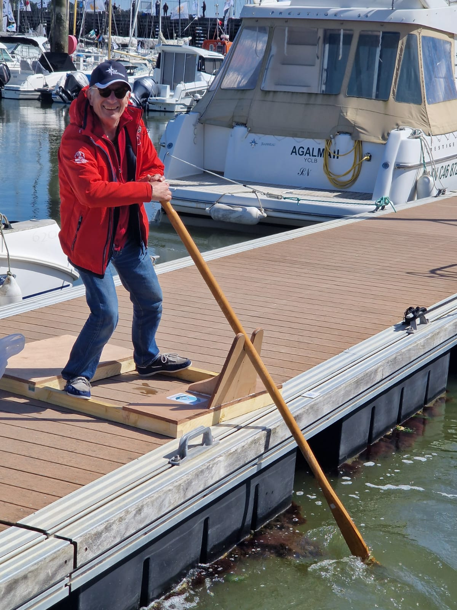
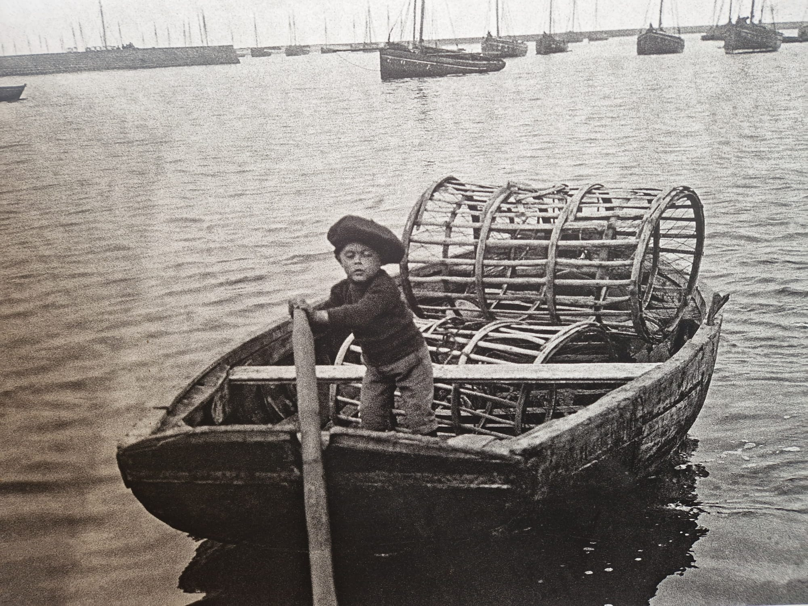
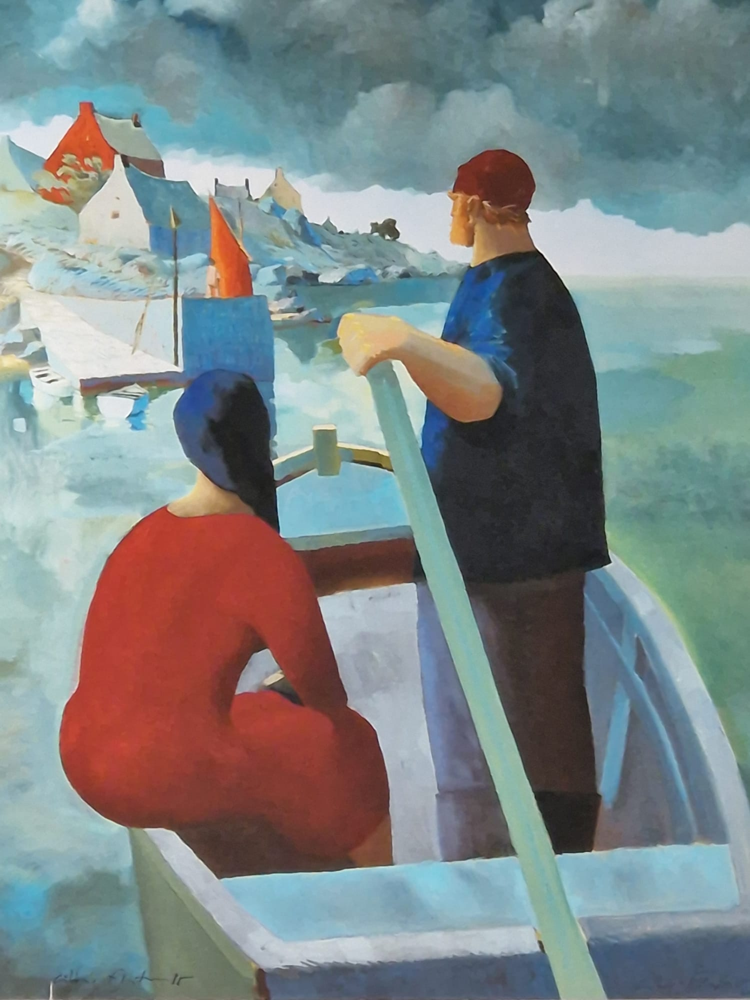
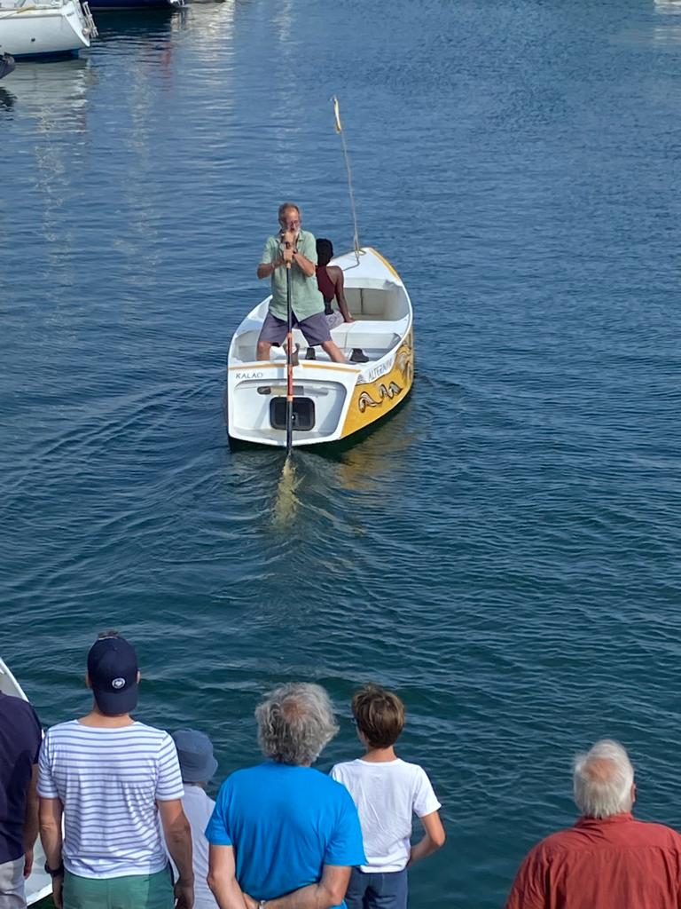
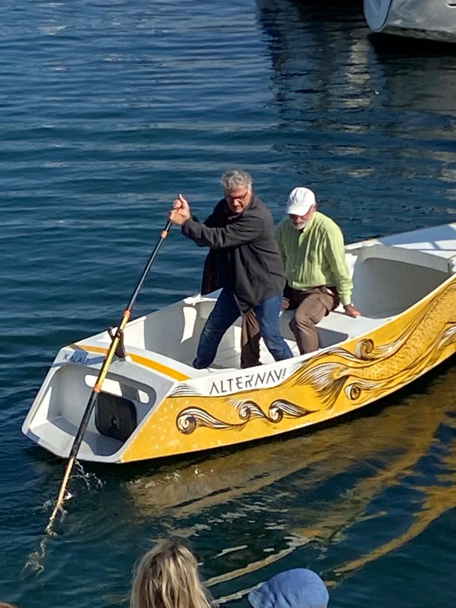

PHILOVENT
For Philippe
Learn to scull, it's an ancestral technique, which has proven itself, and which must not be lost,
it must be passed on!
Non-polluting, efficient, no greenhouse gas emissions, silent, elegant... Quite the opposite of an outboard engine!
Learning to scull can take some time. Like bike riding, this cannot be learnt in a book.
But like bike riding, once you have it, it's for life!
The entire association mourns Philippe who had chosen for his race to carry high the colors and values of fraternity and solidarity of Passe-Coque.
All our members come together to pay tribute to him by carrying high the colors and the sculling technique of which he was an ardent defender,
and our ambassador during the presentation of our project at the start of the race.
We want to show our solidarity with his loved ones, his friends and maintain the unwavering bond that unites us by associating his name with
our project to register this technique as an intangible maritime heritage of humanity with UNESCO.
The name of the project: PHILOVENT for Philippe.

Sculling was invented in regions where the wood needed to make oars does not grow.
This wood had to be imported from the regions where it grows, which had a notable influence on the price of a pair of oars...
Hence the very simple idea (yet another one): if you can move your boat with just one oar, it will cost half as much!
The result is surprising... When you scull, the oar is in the water all the time, propulsive and efficient, which is not the case when you row,
where the oars are out of the water half the time. The scull thus turns out to be the most effective of the options...
For the same reason,
Alex de Roquefeuil builds sculling oars from recycled windsurfing masts.
And his oars are real bombs!
Learn to scull, with
Alex.
End of March 2024
We're going to build a sculling platform, with the advices of Alex de Roquefeuil.

Dimensions:
- Length: 1400 mm
- Width: 800 mm
- Oarlock height: 350 mm
- Oarlock diameter: 70 mm
Pictures
Philippe Benoiton trains on the sculling platform before the start of the Cap Martinique.
Weat Indies? How far?

Painting by Gildas Flahaut

Rubi's Cup 2023, Pierre-Jean & Sonia

Rubi's Cup 2023, Guy & Éric